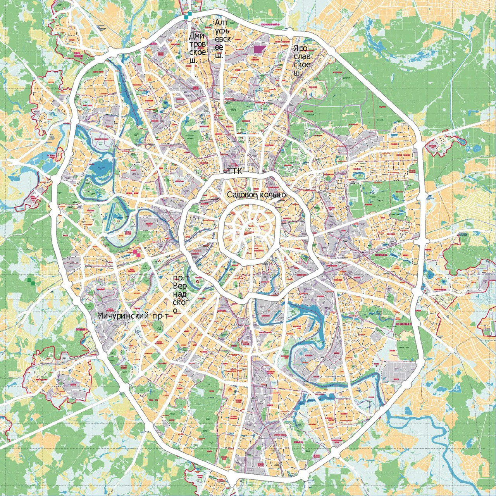

Москва
Столица России и город федерального значения.
Это крупнейший по численности населения город России и её субъект. По состоянию на 2024 год в Москве проживает 13 149 803 человека.
Последние события жизни города
К Москве приссоединят городской округ Троицк
Постройка Рублёво-Архангельской линию метро
Значимые исторические события города
- Основание Москвы датируется 1147 годом и приписывается князю Юрию Долгорукому
- Учреждение Московского Кремля (XIV век) - строительство Кремля началось при Дмитрии Донском в XIV веке.
- Освобождение Москвы от польско-литовских интервентов (XVII век) - в 1612 году Москва была освобождена от польских и литовских войск народным ополчением под руководством Кузьмы Минина и князя Дмитрия Пожарского.
- Создание Российской империи (XVIII век) - после того как Петр I перенес столицу из Москвы в Санкт-Петербург, Москва стала вторым по значимости городом империи.
- Октябрьская революция (XX век) - одним из самых значимых событий XX века стала Октябрьская революция 1917 года, которая произошла в Москве. Она привела к созданию Советского Союза.
- Великая Отечественная война (XX век).
- Восстановление и развитие города после войны (XX век) - после окончания Великой Отечественной войны началась масштабная программа восстановления и развития города.
- Олимпиада-80 (XX век) - летом 1980 года Москва принимала у себя Олимпийские игры.
- Распад Советского Союза (конец XX века) - с распадом Советского Союза в конце 1991 года Москва вновь стала столицей независимой России.
- Современность (XXI век) - сегодня Москва продолжает развиваться и преображаться. Город становится все более современным и привлекательным для туристов и жителей, благодаря новым проектам развития городской инфраструктуры, культуры и бизнеса.
Инфраструктура города
Карта города

Культура и искусство в городе
Среди многочисленных музеев Москвы выделяется Пушкинский музей изобразительных искусств с богатой коллекцией копий произведений древности и эпохи Ренессанса, преимущественно западно-европейских авторов.
Всемирную известность имеет Третьяковская галерея, крупнейший музей русского изобразительного искусства с коллекцией в 40 000 картин, рисунков, скульптур от 11 века до современности.
К достопримечательностям Москвы принадлежит и панорама Бородинского сражения, построенная Францем Робавтом (1856 - 1928).
Общественный транспорт
- Автобусы
- Электробусы
- Трамваи
- Метро
- Монорельс
- Московское центральное кольцо (МЦК)
- Московские центральные диаметры (МЦД)
- Большая кольцевая линия метро (БКЛ)
- Речной транспорт